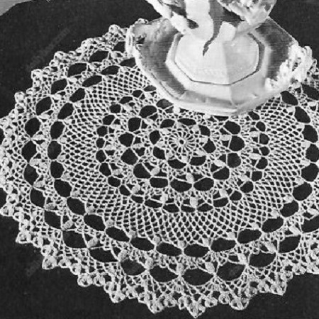

Honeysuckle Pattern
MATERIALS:
J. & P. COATS "BIG BALL" BEST SIX CORD MERCERIZED CROCHET, Art. A. 104, Size 30: 1 ball of No. 1 White, No. 61 Ecru or No. 42 Cream; or CLARK'S "BIG BALL" MERCERIZED CROCHET, Art. B. 34, Size 30: 1 ball of No. 1 White, No. 61 Ecru or No. 42 Cream;
or
CLARK'S "BIG BALL" MERCERIZED CROCHET, Art. B. 345, Size 30: 1 ball of White or Ecru.
Milwards Steel Crochet Hook No. 10.
Doily measures 14 inches in diameter.
Starting at center: ch 10. Join with sl st to form ring.
1st rnd: Ch 1, make 16 sc in ring. Join to first sc.
2nd rnd: Ch 6, (tr in ring, ch 2) 15 times. Join to 4th ch of ch-6.
3rd rnd: Ch 1, sc in joining, (ch 4, sc in next tr) 15 times; ch 2, hdc in first sc to form last loop.
4th rnd: Ch 1, sc in loop just formed, * ch 5, holding back on hook the last loop of each tr, make 5 tr in next loop, thread over and draw through all loops on hook-cluster made; ch 5, sc in next loop. Repeat from * around, ending with ch 5, holding back on hook the last loop of each st, make 5 tr in next loop, dtr in first sc, thread over and draw through all loops on hook.
5th rnd: Ch 1, * sc in tip of cluster, ch 11. Repeat from * around. Join to first sc.
6th rnd: Ch 1, sc in joining, * in next loop make (sc, ch 5) 5 times and sc; sc in next sc. Repeat from * around, ending with (sc, ch 5) 5 times and sc in last loop. Join to first sc.
7th rnd: Sl st to center of next loop, sc in same loop, * (ch 5, sc in next loop) 4 times; ch 3, sc in next loop. Repeat from * around, ending with ch 1, hdc in first sc to form last loop.
8th rnd: Ch 5, make 4-dtr cluster in loop just formed, * ch 7, skip 1 loop, sc in next loop, ch 5, sc in next loop, ch 7, skip 1 loop, 5-dtr cluster in next ch-3 loop. Repeat from * around, ending with ch 7. Join to tip of first cluster.
9th rnd: Ch 16, * dc in next ch-5 loop, ch 13, dc in tip of next cluster, ch 13. Repeat from * around. Join to 3rd ch of ch-16.
10th rnd: Ch 1, sc in joining, * in next loop make (sc, ch 5) 5 times and sc; sc in next dc. Repeat from * around. Join to first sc.
11th rnd: Repeat 7th rnd.
12th rnd: Work as for 8th rnd, making ch 6 at each side of cluster instead of ch
13th rnd: Ch 12, * dc in next ch-5 loop, ch 9, dc in tip of next cluster, ch 9. Repeat from * around. Join to 3rd ch of ch-12.
14th rnd: Ch 1, sc in joining, * ch 5, in next loop make (sc, ch 5) twice; sc in next sc. Repeat from * around, ending with ch 2, dc in first sc. (96 loops).
Next 5 rnds: Ch 1, sc in loop just formed, * ch 5, sc in next loop. Repeat from * around, ending as on 14th rnd.
20th rnd: Ch 1, sc in loop, * ch 5, 5-tr cluster in next loop, (ch 5, sc in next loop) twice. Repeat from * around, ending with ch 5. Join to first sc.
21st rnd: Sl st to tip of next cluster, ch 16, * dc in tip of next cluster, ch 13. Repeat from * around. Join as on 9th rnd.
22nd rnd: Repeat 10th rnd.
23rd rnd: Sl st to center of next loop, sc in same loop, * (ch 4, sc in next loop) 4 times; ch 3, sc in next loop. Repeat from * around, ending as on 7th rnd.
24th rnd: Repeat 8th rnd.
25th rnd: Ch 1, * sc in tip of cluster, ch 19. Repeat from * around. Join.
26th rnd: Ch 1, sc in joining, * (ch 5, skip next 3 ch, sc in next ch) 4 times; ch 5, sc in next sc. Repeat from * around, ending with ch 2, dc in first sc.
27th rnd: Ch 1, sc in loop just formed, * ch 3, sc in next loop, (ch 5, sc in next loop) 4 times. Repeat from * around, ending as on 26th rnd.
28th rnd: Ch 1, sc in loop just formed, * 3 dc in next ch-3 loop, sc in next loop, ch 5, sc in next loop, ch 7, sc in next loop, ch 5, sc in next loop. Repeat from * around, ending as on 26th rnd.
29th rnd: Ch 1, 3 sc in loop just formed, * sl st in next sc, following 3 dc and next sc; 5 sc in next loop, 7 sc in next loop, 5 sc in next loop. Repeat from * around, ending with 2 sc in first loop used at beg of rnd. Join.
30th rnd: Ch 3, in joining make 2-dc cluster, ch 3 and 3-dc cluster; * ch 1, in center sc of next loop make 3-dc cluster.
ch 3 and 3-dc cluster; ch 1, in center sc of next loop make 3-dc cluster, ch 5, 3-tr cluster, ch 5 and 3-dc cluster; ch 1, in center sc of next loop make 3-dc cluster, ch 3 and 3-dc cluster. Repeat from * around. Join to first cluster. Break off and fasten. Starch lightly and press.
HOME